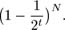

C++ Programming Robert Sedgewick - Princeton University Addison Wesley Professional Algorithms in C++, Parts 1–4: Fundamentals, Data Structure, Sorting, Searching, Third Edition
15.2. Tries
In this section, we consider a search tree that allows us to use the bits of the keys to guide the search, in the same way that DSTs do, but that keeps the keys in the tree in order, so that we can support recursive implementations of sort and other symbol-table functions, as we did for BSTs. The idea is to store keys only at the bottom of the tree, in leaf nodes. The resulting data structure has a number of useful properties and serves as the basis for several effective search algorithms. It was first discovered by de la Briandais in 1959, and, because it is useful for retrieval, it was given the name trie by Fredkin in 1960. Ironically, in conversation, we usually pronounce this word "try-ee" or just "try," so as to distinguish it from "tree." For consistency with the nomenclature that we have been using, we perhaps should use the name "binary search trie," but the term trie is universally used and understood. We consider the basic binary version in this section, an important variation in Section 15.3, and the basic multiway version and variations in Sections 15.4 and 15.5.
We can use tries for keys that are either a fixed number of bits or are variable-length bitstrings. To simplify the discussion, we start by assuming that no search key is the prefix of another. For example, this condition is satisfied when the keys are of fixed length and are distinct.
In a trie, we keep the keys in the leaves of a binary tree. Recall from Section 5.4 that a leaf in a tree is a node with no children, as distinguished from an external node, which we interpret as a null child. In a binary tree, a leaf is an internal node whose left and right links are both null. Keeping keys in leaves instead of internal nodes allows us to use the bits of the keys to guide the search, as we did with DSTs in Section 15.1, while still maintaining the basic invariant at each node that all keys whose current bit is 0 fall in the left subtree and all keys whose current bit is 1 fall in the right subtree.
Definition 15.1. A trie is a binary tree that has keys associated with each of its leaves, defined recursively as follows: The trie for an empty set of keys is a null link; the trie for a single key is a leaf containing that key; and the trie for a set of keys of cardinality greater than one is an internal node with left link referring to the trie for the keys whose initial bit is 0 and right link referring to the trie for the keys whose initial bit is 1, with the leading bit considered to be removed for the purpose of constructing the subtrees|
Each key in the trie is stored in a leaf, on the path described by the leading bit pattern of the key. Conversely, each leaf contains the only key in the trie that begins with the bits defined by the path from the root to that leaf. Null links in nodes that are not leaves correspond to leading-bit patterns that do not appear in any key in the trie. Therefore, to search for a key in a trie, we just branch according to its bits, as we did with DSTs, but we do not do comparisons at internal nodes. We start at the left of the key and the top of the trie, and take the left link if the current bit is 0 and the right link if the current bit is 1, moving one bit position to the right in the key. A search that ends on a null link is a miss; a search that ends on a leaf can be completed with one key comparison, since that node contains the only key in the trie that could be equal to the search key. Program 15.2 is an implementation of this process.
To insert a key into a trie, we first perform a search, as usual. If the search ends on a null link, we replace that link with a link to a new leaf containing the key, as usual. But if the search ends on a leaf, we need to continue down the trie, adding an internal node for every bit where the search key and the key that was found agree, ending with both keys in leaves as children of the internal node corresponding to the first bit position where they differ. Figure 15.6 gives an example of trie search and insertion; Figure 15.7 shows the process of constructing a trie by inserting keys into an initially empty trie. Program 15.3 is a full implementation of the insertion algorithm.
Keys in a trie are stored in leaves (nodes with both links null); null links in nodes that are not leaves correspond to bit patterns not found in any keys in the trie. In a successful search for the key H = 01000 in this sample trie (top), we move left at the root (since the first bit in the binary representation of the key is 0), then right (since the second bit is 1), where we find H, which is the only key in the tree that begins with 01. None of the keys in the trie begin with 101 or 11; these bit patterns lead to the two null links in the trie that are in non-leaf nodes. To insert I (bottom), we need to add three non-leaf nodes: one corresponding to 01, with a null link corresponding to 011; one corresponding to 010, with a null link corresponding to 0101; and one corresponding to 0100 with H = 01000 in a leaf on its left and I = 01001 in a leaf on its right.
|
This sequence depicts the result of inserting the keys A S E R C H I N into an initially empty trie.
Program 15.2. Trie search|
This function uses the bits of the key to control the branching on the way down the trie, in the same way as in Program 15.1 for DSTs. There are three possible outcomes: if the search reaches a leaf (with both links null), then that is the unique node in the trie that could contain the record with key v, so we test whether that node indeed contains v (search hit) or some key whose leading bits match v (search miss). If the search reaches a null link, then the parent's other link must not be null, so there is some other key in the trie that differs from the search key in the corresponding bit, and we have a search miss. This code assumes that the keys are distinct, and (if the keys may be of different lengths) that no key is a prefix of another. The item member is not used in non-leaf nodes.
private:
Item searchR(link h, Key v, int d)
{ if (h == 0) return nullItem;
if (h->l == 0 && h->r == 0)
{ Key w = h->item.key();
return (v == w) ? h->item : nullItem; }
if (digit(v, d) == 0)
return searchR(h->l, v, d+1);
else return searchR(h->r, v, d+1);
}
public:
Item search(Key v)
{ return searchR(head, v, 0); }
|
We do not access null links in leaves, and we do not store items in non-leaf nodes, so we could save space by using union or a pair of derived classes to define nodes as being one of these two types (see Exercises 15.20 and 15.21). For the moment, we will take the simpler route of using the single node type that we have been using for BSTs, DSTs, and other binary tree structures, with internal nodes characterized by null keys and leaves characterized by null links, knowing that we could reclaim the space wasted because of this simplification, if desired. In Section 15.3, we will see an algorithmic improvement that avoids the need for multiple node types, and in Chapter 16, we will examine an implementation that uses union.
Program 15.3. Trie insertion|
To insert a new node into a trie, we search as usual, then distinguish the two cases that can occur for a search miss.
If the miss was not on a leaf, then we replace the null link that caused us to detect the miss with a link to a new node, as usual.
If the miss was on a leaf, then we use a function split to make one new internal node for each bit position where the search key and the key found agree, finishing with one internal node for the leftmost bit position where the keys differ. The switch statement in split converts the two bits that it is testing into a number to handle the four possible cases. If the bits are the same (case 002 = 0 or 112 = 3), then we continue splitting; if the bits are different (case 012 = 1 or 102 = 2), then we stop splitting.
private:
link split(link p, link q, int d)
{ link t = new node(nullItem); t->N = 2;
Key v = p->item.key(); Key w = q->item.key();
switch(digit(v, d)*2 + digit(w, d))
{ case 0: t->l = split(p, q, d+1); break;
case 1: t->l = p; t->r = q; break;
case 2: t->r = p; t->l = q; break;
case 3: t->r = split(p, q, d+1); break;
}
return t;
}
void insertR(link& h, Item x, int d)
{ if (h == 0) { h = new node(x); return; }
if (h->l == 0 && h->r == 0)
{ h = split(new node(x), h, d); return; }
if (digit(x.key(), d) == 0)
insertR(h->l, x, d+1);
else insertR(h->r, x, d+1);
}
public:
ST(int maxN)
{ head = 0; }
void insert(Item item)
{ insertR(head, item, 0); }
|
We now shall consider a number of basic of properties of tries, which are evident from the definition and these examples.
Property 15.2. The structure of a trie is independent of the key insertion order: There is a unique trie for any given set of distinct keys|
This fundamental fact, which we can prove by induction on the subtrees, is a distinctive feature of tries: for all the other search tree structures that we have considered, the tree that we construct depends both on the set of keys and on the order in which we insert those keys.
|
The left subtree of a trie has all the keys that have 0 for the leading bit; the right subtree has all the keys that have 1 for the leading bit. This property of tries leads to an immediate correspondence with radix sorting: binary trie search partitions the file in exactly the same way as does binary quicksort (see Section 10.2). This correspondence is evident when we compare the trie in Figure 15.6 with Figure 10.4, the partitioning diagram for binary quicksort (after noting that the keys are slightly different); it is analogous to the correspondence between binary tree search and quicksort that we noted in Chapter 12.
In particular, unlike DSTs, tries do have the property that keys appear in order, so we can implement the sort and select symbol-table operations in a straightforward manner (see Exercises 15.17 and 15.18). Moreover, tries are as well-balanced as DSTs.
Property 15.3. Insertion or search for a random key in a trie built from N random (distinct) bitstrings requires about lg N bit comparisons on the average. The worst-case number of bit comparisons is bounded only by the number of bits in the search key|
We need to exercise care in analyzing tries because of our insistence that the keys be distinct, or, more generally, that no key be a prefix of another. One simple model that accommodates this assumption requires the keys to be a random (infinite) sequence of bits—we take the bits that we need to build the trie.
The average-case result then comes from the following probabilistic argument. The probability that each of the N keys in a random trie differ from a random search key in at least one of the leading t bits is

Subtracting this quantity from 1 gives the probability that one of the keys in the trie matches the search key in all of the leading t bits. In other words,
is the probability that the search requires more than t bit comparisons. From elementary probabilistic analysis, the sum for t  0 of the probabilities that a random variable is > t is the average value of that random variable, so the average search cost is given by 0 of the probabilities that a random variable is > t is the average value of that random variable, so the average search cost is given by
Using the elementary approximation (1 – 1/x)x ~ e–1, we find the search cost to be approximately
The summand is extremely close to 1 for approximately lg N terms with 2t substantially smaller than N; it is extremely close to 0 for all the terms with 2t substantially greater than N; and it is somewhere between 0 and 1 for the few terms with 2t  N. So the grand total is about lg N. Computing a more precise estimate of this quantity requires using extremely sophisticated mathematics (see reference section). This analysis assumes that w is sufficiently large that we never run out of bits during a search, but taking into account the true value of w will only reduce the cost. N. So the grand total is about lg N. Computing a more precise estimate of this quantity requires using extremely sophisticated mathematics (see reference section). This analysis assumes that w is sufficiently large that we never run out of bits during a search, but taking into account the true value of w will only reduce the cost.
In the worst case, we could get two keys that have a huge number of equal bits, but this event happens with vanishingly small probability. The probability that the worst-case result quoted in Property 15.3 will not hold is exponentially small (see Exercise 15.29).
|
Another approach to analyzing tries is to generalize the approach that we used to analyze BSTs (see Property 12.6). The probability that k keys start with a 0 bit and N – k keys start with a 1 bit is
so the external path length is described by the recurrence
This recurrence is similar to the quicksort recurrence that we solved in Section 7.2, but it is much more difficult to solve. Remarkably, the solution is precisely N times the expression for the average search cost that we derived for Property 15.3 (see Exercise 15.26). Studying the recurrence itself gives insight into why tries have better balance than do BSTs: The probability is much higher that the split will be near the middle than that it will be anywhere else, so the recurrence is more like the mergesort recurrence (approximate solution N lg N) than like the quicksort recurrence (approximate solution 2N ln N).
An annoying feature of tries, and another one that distinguishes them from the other types of search trees that we have seen, is the oneway branching required when keys have bits in common. For example, keys that differ in only the final bit always require a path whose length is equal to the key length, no matter how many keys there are in the tree, as illustrated in Figure 15.8. The number of internal nodes can be somewhat larger than the number of keys.
This sequence depicts the result of inserting the keys H = 01000 and I = 01001 into an initially empty binary trie. As it is in DSTs (see Figure 15.4), the path length is limited by the length of the binary representation of the keys; as illustrated by this example, however, paths could be that long even with only two keys in the trie.
Property 15.4. A trie built from N random w-bit keys has about N/ ln 2 1.44N nodes on the average|
By modifying the argument for Property 15.3, we can write the expression
for the average number of nodes in an N-key trie (see Exercise 15.27). The mathematical analysis that yields the stated approximate value for this sum is much more difficult than the argument that we gave for Property 15.3, because many terms contribute values that are not 0 or 1 to the value of the sum (see reference section).
|
We can verify these results empirically. For example, Figure 15.9 shows a big trie, which has 44 percent more nodes than does the BST or the DST built with the same set of keys but nevertheless is well balanced, with a near-optimal search cost. Our first thought might be that the extra nodes would raise the average search cost substantially, but this suspicion is not valid—for example, we would increase the average search cost by only 1 even if we were to double the number of nodes in a balanced trie.
This trie, built by inserting about 200 random keys, is well-balanced, but has 44 percent more nodes than might otherwise be necessary, because of one-way branching. (Null links on leaves are not shown.)
For convenience in the implementations in Programs 15.2 and 15.3, we assumed that the keys are of fixed length and are distinct, so that we could be certain that the keys would eventually distinguish themselves and that the programs could process 1 bit at a time and never run out of key bits. For convenience in the analyses in Properties 15.215.2and 15.3, we implicitly assumed that the keys have an arbitrary number of bits, so that they eventually distinguish themselves except with tiny (exponentially decaying) probability. A direct off-shoot of these assumptions is that both the programs and the analyses apply when the keys are variable-length bitstrings, with a few caveats.
To use the programs as they stand for variable-length keys, we need to extend our restriction that the keys be distinct to say that no key be a prefix of another. This restriction is met automatically in some applications, as we shall see in Section 15.5. Alternatively, we could handle such keys by keeping information in internal nodes, because each prefix that might need to be handled corresponds to some internal node in the trie (see Exercise 15.31).
For sufficiently long keys comprising random bits, the average-case results of Properties 15.215.2and 15.3 still hold. In the worst case, the height of a trie is still limited by the number of bits in the longest keys. This cost could be excessive if the keys are huge and perhaps have some uniformity, as might arise in encoded character data. In the next two sections, we consider methods of reducing trie costs for long keys. One way to shorten paths in tries is to collapse one-way branches into single links—we discuss an elegant and efficient way to accomplish this task in Section 15.3. Another way to shorten paths in tries is to allow more than two links per node—this approach is the subject of Section 15.4.
|